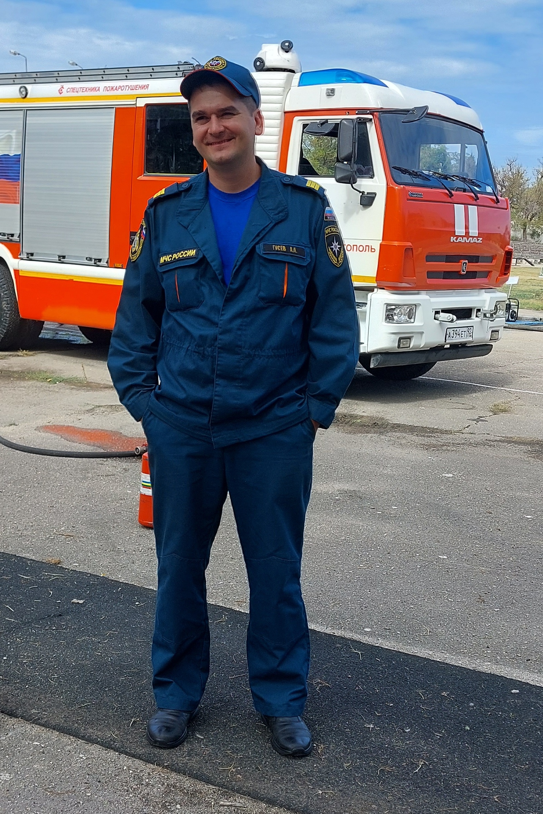

ИНВЕСТИЦИИ В СВОБОДУ!

Всем доброго времени суток. Меня зовут Алексей.
Это блог про бизнесс и инвестиции, основанный на моём скромном опыте. Многие из нас хотят обрести финасовую
свободу и независимость.
Я хочу поделиться своими попытками это сделать, что из этого получилось вы решите сами... Надеюсь кому-то
поможет...
Стратегия доходные автомобили
Есть 2 стратегии в доходные автомобили одна инвестиционная: человек покупает автомобиль сдёт его в управляющую компанию и получает пассивный доход и другая бизнесс
стратегия,где человек покупает автомобиль и занимается всем сам.Я использовал вторую.
В марте 2019 года,мы с моим коллегой по работе сидели на фасаде возле части и мечтали работать на себя,смотрели различные видео на YouTube и активно обсуждали
различные проекты.Из многочисленых вариантов нам понравилась стретегия доходных автомобилей.Мы захотели купить автомобиль и сдать его в аренду под такси, я всё тогда переживал,
что не понимаю как их ремонтировать,но мой товарищ говорил,что не волнуйся я знаю,а ты со временем научишься да и YouTube в помощь как говорится.
Вообщем мы решили взять кредит и попробовать.

Брали в нашем местном банке под 14% годовых, страховку не оформляли,предоставили справку 2НДФЛ и банк нам одобрил
200 000 рублей.
Затем мы начали искать автомобиль,искали на сайте Avito и Drom потом встречались с людьми,смотрели
машины
торговались,перебрали множество вариантов и нам подвернулся неплохой вариант Daewoo Nexia.За 170 000 рублей с газовой
установкой (ГБО-4 поколения).
После этого мы установили на автомобиль Глонас треккер M25, сделали страховку на неограниченое количество водителей
и через тот же Avito, сдали в аренду за 750 рублей в день
плюс
мы взяли залог 5000 рублей.
Радости не было предела,я чувствовал,что мы совершили какую-то нереально крутую сделку и у нас завертелись
серьёзные дела.
Прошло несколько недель и наша ласточка начала рассыпаться, мы смотрели YouTube и делали всё как там, возникало
множество нюансов,
но все они решались.Ремонт мы делали на общественной яме, возле дома, пока нам меняли резину на шиномонтаже мы меняли колодки,
колодки мы как-то меняли даже на стоянке на заправке.Бывало приходилось забирать машины у арендаторов,как только появлялся долг
или мы понимали,что он может поступить недобросовестно и лучше дел с такими не иметь,надо сразу забирать машину и долго не чирикаться.
За 8 месяцев Daewoo полностью окупила себя и закрыла кредит.И мы конечно взяли второй,уже на 250 000 рублей.
Сильное желание преуспеть в каком-то деле даёт возможности исполнения и неизбежный результат!
Вторую машину мы выбирали далеко от нашего дома,на расстоянии 500-700 км,цены там были дешевле 2 дня мы катались
по городам смотрели
разные варианты,я читал приёмы как торговаться и мы активно их применяли.В итоге нам подвернулась
машина Renault logan 2008 года. Купили мы её за 220 000 рублей. Перегнали к нам в город, поставили ГБО-4
поколения, поставили маяк Глонас,
сделали страховку на неограниченое количество водителей подали объявление на сайт и сдали через некторое время.
Окупаемость у Рено была около года.Сдавали мы его за 5000 р/неделю зимой, 6000 р/неделю весной и осенью и 7000 р/неделю
летом.Принесла в среднем 100% годовых.
Третья машина была моей и я отдал её в долг нашей "Конторе" за 250 000 рублей.Долг мне вернулся за 1 год и 5 месяцев.Это был
Nissan Almera 2004 года.Ломалась она чаще Daewoo Nexia, но всё равно я считаю её очень надёжным автомобилем,всё очень зависит
от эксплуатации,а жалеть их и бережно эксплуатировать будут 20% арендаторов.
Четвёртую машину мы взяли Mitsubishi Lancer 2005 года за 250 000 рублей с капиталенным двигателем и множеством неисправностей, автомобиль как конструктор,
всегда можно починить, тем более к тому времени мы уже их наремонтировались с головой.
Пятой и заключительной машоной стал Renault logan 2009 года.Уж очень она надёжная и вместительная.Обошлась она нам в 222 000 рублей.
Когда эту машину мы ставили на учёт в ГАИ узнали,что на ней лежит запрет на регистрационные действия и надо было решать,что-то с приставами
я зашёл на государственный сайт, ввёл номер судебного производства, мне выдало фамилию,имя пристава и дело,видимо человек не оплачивал
свой кредитный долг и ему положили ограничительные действия на автомобиль,там был ещё указан телефон пристава.Сначала я позвонил
хозяину автомобиля и попросил расчитаться с приставами,сумма там была 12 000 рублей.Он ответил,что деньги от продажи он уже потратил,
попросил оплатить нам,а он потом вернёт.
Потом я позвонил приставу,объяснил ситуацию и поинтересовался нет ли у него ещё имущества на которое можно было бы переложить этот запрет,
мне повезло и сказали что переложат его на землю,которой он владеет.
Всегда перед покупкой проверяйте машину:
- Находится она в кредите,в залоге или под арестом
- Проверяйте на штрафы
- Сверяйте номер двигателя на документах и на двигателе
- Проверяйте толщиномером лакокрасочные детали кузова
- Компресию в двигателе
- Состояние ходовой части
Первые пункты абсолютоно бесплатно можно посмотреть на официальном сайте ГИБДД и официальном сайте ФССП.Ещё
очень полезно купить отчёт
из сайтов, где продают машины.Там указаны периоды регистрации и пробег,в тот момент когда машина
регистрировалась в ГАИ,можно
понять был ли скручен пробег.Ну,а заключительные пункты вам помогут осуществить на любом СТО вашего города.
Итак у нас работало 5 автомобилей и масштабироваться дальше мы не стали, так как машины часто попадали в ДТП и мы думали,что если машина попадёт
в тотальное ДТП,где нет возможности её отремонтировать.Тогда во-первых человек может очень сильно пострадать или убежать.А во-вторых машина может находиться
в ещё не погашенном кредите и кредит останется,а машины уже не будет.Так и было с Renault logan она попала в тотальное ДТП,водителя
госпитализировали,а машина не подлежала востановлению.Кредит на тот момент был по ней закрыт.
Некоторые ДТП наших доходных автомобилей
B итоге:
Машины приносили нам 100% годовых и дело оказалось прибыльным. Тем кто хочет заняться этим делом,я бы
советовал заняться в
небольших масштабах,машин 5 не более.Риски есть и будут в любом предпринимательском деле, поэтоу просто надо
делать, действие-основной
показатель результата!